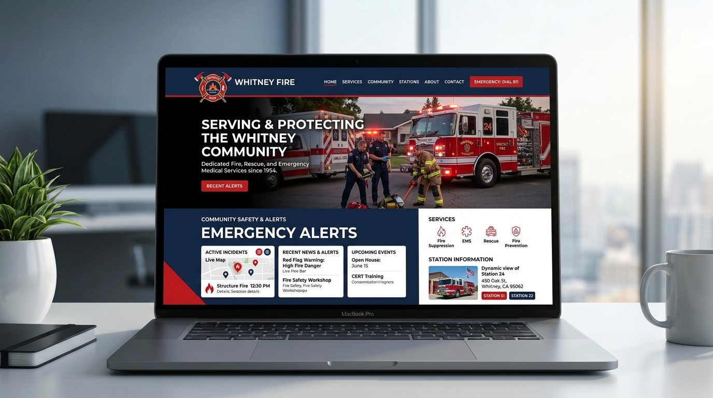

Whitney Fire Protection District — Municipal Emergency Services & Public Safety Portal
Are you looking to deploy accessible civic emergency portals and real-time public safety alert systems? See how we built the digital hub for Whitney Fire Protection District.

The Problem
In municipal web development and civic emergency services, district residents and commercial property managers require immediate, reliable access to fire prevention codes, emergency burn permits, active incident warnings, and fire station resources. The legacy site lacked mobile responsiveness and critical alert infrastructure.
- No emergency alert banner system for red flag warnings or active hazard notifications
- Paper-based burn permit applications causing delays for rural property owners
- Non-compliance with federal ADA / Section 508 web accessibility regulations
- Difficult public access to district board meeting minutes and public financial disclosures
Our Solution
We engineered a highly accessible civic fire department portal featuring real-time emergency alert broadcasting, digitized online permit filing workflows, station locator directories, and strict WCAG 2.1 AA accessibility compliance.
- Real-time emergency broadcast banner with push notification capability
- Digital burn permit application and automated approval verification system
- Interactive fire station directory and response coverage zone maps
- WCAG 2.1 AA compliant design with high-contrast toggles and screen reader support
- Comprehensive public records archive with instant PDF document search
The Result
The Whitney Fire Protection District modern portal serves as a trusted, resilient lifeline for the community during critical emergencies and everyday civic safety.
- 100% digital transition for seasonal agricultural and residential burn permits
- Instant broadcast capability reaching thousands of residents during wildfire warnings
- 100% ADA Section 508 compliance rating achieved
- +85% reduction in non-emergency phone calls to district dispatchers
Key Features
Emergency Alert Broadcast System
High-priority banner notification system for weather alerts and fire danger ratings.
Online Burn Permit Engine
Automated residential permit generation with weather condition verification.
Station & Apparatus Directory
Detailed profiles of district emergency vehicles, equipment, and station crews.
Full ADA Web Accessibility
Screen-reader optimized, semantic markup meeting government digital standards.
Technology Stack
Need to Build a Resilient Civic, Government, or Emergency Portal?
We specialize in accessible, high-reliability public sector web systems, real-time alert broadcasts, and secure municipal portals.